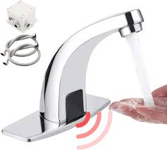

Using traditional taps isn't easy. Upgrade to our sensor taps for convenience!
Visit us to Know More"Master hygiene with our advanced sensor taps. Whether you're upgrading from traditional taps or seeking the latest innovation, our taps cater to all needs."
Enjoy cutting-edge sensor technology designed for ease and efficiency.
Maintain a cleaner environment with touchless operation.
Experience long-lasting performance with our high-quality sensor taps.